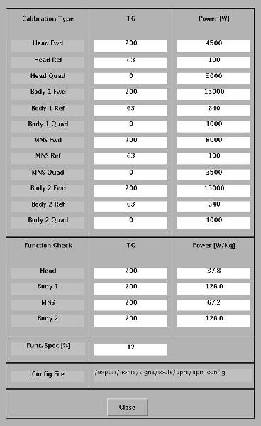

GE Exclusive Use Only
Direction 5670006, Rev# 1
Module Version 17.0, Version Date 10/13/11
GE Exclusive Use Only |
| ||||
| fatal electric shock! | ||||
| hazardous voltages present throughout the rf cabinet when energized. | ||||
| disable RF amplifier when configuring the calibration tools. |
| ||||
| ELECTRICAL/RF BURN HAZARD. | ||||
| RF BURNS Can Occur AS A RESULT OF DISCONNECTING HELIAX CABLES WHILE THE SYSTEM IS SCANNING. | ||||
| PREVENT POSSIBLE RF BURNS WHEN DISCONNECTING HELIAX CABLES FROM J3, J4, or J22 ON THE RF AMP BY VERIFYING THAT THE SYSTEM IS NOT MANUALLY PRESCANNING OR SCANNING. VERIFY THAT THE SCAN DESKTOP ICON DISPLAYS THE “IDLE” MESSAGE AND THE RF ENABLE SWITCH IS IN THE “OFF” POSITION. |
| ||||
| Possible Equipment Damage. | ||||
| Operating the RF amplifier with improper loads may permanently damage the amplifier. | ||||
| Do not operate the RF amplifier with an improper load connected to its output. |
| ||||
| Possible Equipment Damage. | ||||
| Coils and phantoms in the magnet bore that are not connected to the system can cause equipment damage. | ||||
| Prevent coil and associated switch damage by removing all phantoms and hardware (i.e., head coil, surface coil) from the magnet bore unless otherwise instructed. |
| Condition | Reference | Effectivity |
|---|---|---|
Properly calibrated RF output and UPM for selected RF chain. | - | |
- | - |
RF output must be calibrated and UPM calibration must be completed for selected Body channel before performing these functional checks. When running functional check for Body channel 1, remove the input for channel 2 (J21). When running functional check for Body channel 2, remove the input for channel 1 (J14).
Inhibit TR and DD faults. Disable the Driver Module TR and DD fault detection. See Illustration 1. Ensure Switches SW2 and SW3 are in their respective Disable positions.
Place the RF ENABLE switch on front of exciter in the DISABLE (Down) position.
Install the dummy load.
If checking Body Channel 1, remove the Body Heliax cable from BODY RF OUT / J4. If checking Body Channel 2, remove the Body Heliax cable from BODY RF OUT / J22.
Connect the 35 KW RF dummy load from the Power Measurement kit into J4 or J22
Plug the power supply on the dummy load into 110 VAC service outlet in the System Cabinet.
Place the RF ENABLE switch in the ENABLE (Up) position.
On the scanner operator control panel (OCP) press [Align on].
Move the cradle to place the Laser alignment light on the center of the table.
Press Landmark.
Press Advance to Scan.
Start the RF/UPM tool:
In proprietary mode, [Click here to start tool] from the Calibration tab.
For the Class A service tool:
From the Common Service Desktop, select the Calibration Tab.
Select the [UPM Tool] from the calibration menu and select [Click here to start this tool].
Illustration 3 shows an example of the UPM tool.
For Nuclei select [1H].
For RF Chain, select [Body Ch 1] or [Body Ch 2].
For Task, select [UPM Func Chk].
Select the [Start] button then click [YES] in answer to the setup question.
The user will be prompted during test execution. The following illustrations show an example of the pop up and error log that should be seen. Verify the error log and click [Yes] if an error message is seen.
Proceed to the next logical step in the RF/UPM calibration process, or proceed to Head UPM Functional Check.
If functional checks fail, refer to Universal Power Monitor (UPM) Troubleshooting.
Inhibit TR and DD faults. Disable the Driver Module TR and DD fault detection in the Pen Cabinet, see Illustration 7. Ensure switches SW2 and SW3 are in the TR DISABLE and DD DISABLE positions.
Switch RF ENABLE on front of the exciter to the Disable (down) position.
Install the dummy load.
Place the head coil and connect it to the LPCA.
Landmark on the cradle where the head coil is.
On the operator control panel (OCP) press Advance to Scan.
Refer to Setting up Software Tool to Functional Check UPM - Body Channel Functional Check, Step 5 to start the Service browser.
For Nuclei select [1H].
For RF Chain select [Head].
For Task, select [UPM Func Chk].
Select the [Start] button.
On the Head Coil Setup OK screen, click [Yes] when the head coil is ready to go.
The user will be prompted during test execution. Illustration 5 and Illustration 6 show examples of the pop up and error log that should be seen. Verify the error log and click [Yes] if an error message is seen.
To proceed:
If the test passes, select [Quit] from the UPM Main Window.
If the test fails, refer to Troubleshooting UPM.
Switch RF ENABLE on front of exciter to the Disable (down) position.
Remove the cables and measurement equipment.
Reattach the Head and Body heliax cables.
To re-enable fault detection, set switch SW2 and SW3 to their respective Enable positions.
Switch RF ENABLE on the front of the exciter to the Enable (up) position.
Complete a TPS reset and do a test scan.
Any failure after Troubleshooting is complete will require a re-calibration of the UPM system. See Universal Power Monitor - Head and Body Setup and Calibration.
Problem: Config file CRC mismatch
Problem: RF amplifier does not output power during RF amplifier or UPM calibration
Problem: UPM Tool procedure fails to launch, returns “ERROR” status
Problem: RF power output during UPM Calibration procedure is not within specified limits
Solution 1:
Solution 2: Recheck RF Amp output
Solution 3: Reboot the system. .
Solution 4:
Solution 5:
Solution 6: The problem could be a bad Processor Module
Solution 7: The problem could be a bad Detector Board
For additional troubleshooting information, refer to Universal Power Monitor (UPM) Troubleshooting.
The Universal Power Monitor calibration parameters found in the UPM configuration file (/export/home/signa/tools/upm/upm.config) are used in the Calibration/Functional Check tasks. This configuration file is accessible from within the UPM Calibration tool from the File menu > View Config option. These values can be used during troubleshooting to help determine where the power monitor is tripping (if at all). The UPM configuration file shown in Illustration 11 contains the default configuration values for all of the UPM parameters. This screen is just for reference, as the content and values will be different based on the system type. The final UPM digital attenuator values are written to the UPM calibration configuration files (Upm1Cal.cfg, Upm2Cal.cfg) located in directory w/config.
Illustration 11: UPM Config Editor
